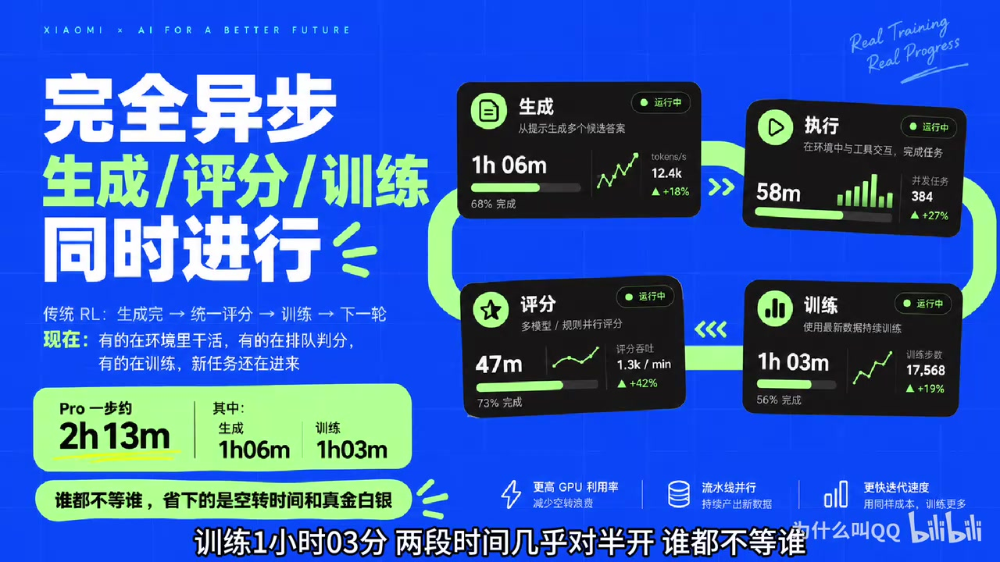
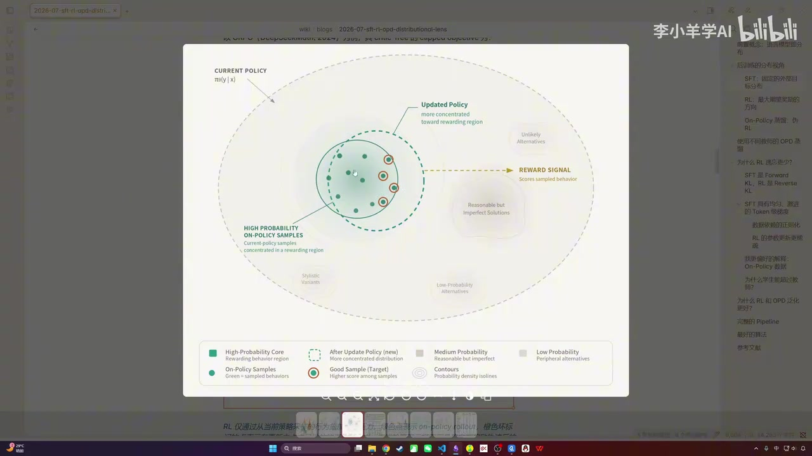
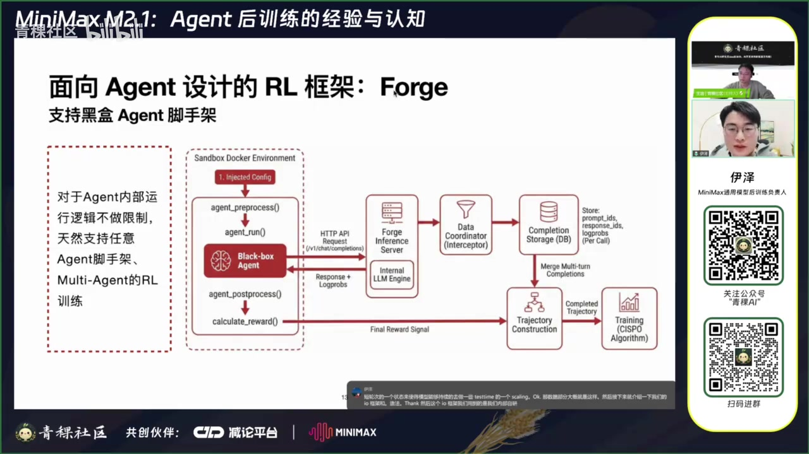
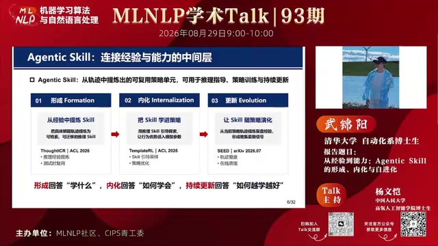
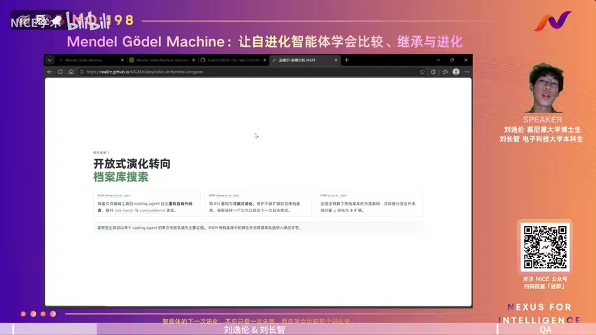
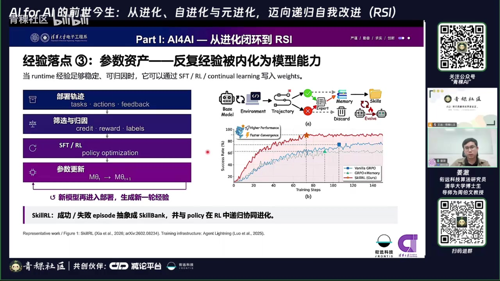
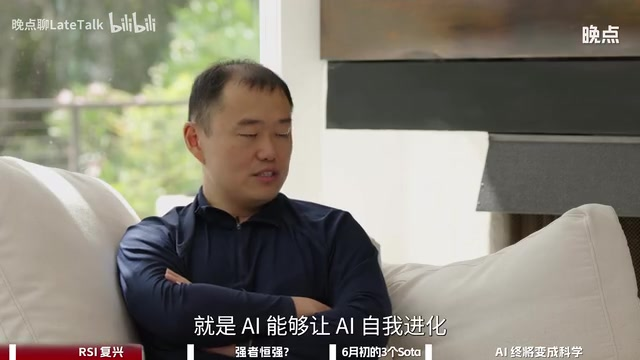

01
专题笔记
按研究方向浏览，或通过关键词检索方法、系统与技术概念。
8 篇

RL POST-TRAINING技术增强版MiMo‑V2.6：强化学习后训练的系统方法
从超大规模 Rollout、动态采样和组内信用分配，深入到异步流水线、沙箱基础设施与训练稳定性。

SFT · RL · OPD独立总结SFT、RL 与 OPD：从训练分布理解后训练方法
比较三种后训练方法如何重塑模型分布，解释灾难性遗忘、on-policy 泛化和密集 token 监督的利弊。

QINGKE TALK 101独立总结MiniMax M2.1：Agent 后训练的数据、系统与评测
从 SWE、AppDev 和 WebExplorer 数据飞轮，到 Forge、CISPO、动态验证与 Agent 评测体系。

MLNLP TALK 93Agentic Skill：从经验形成到能力内化与自进化
理解 Skill 如何从轨迹经验中形成，怎样通过训练内化为参数能力，以及自进化闭环需要哪些关键机制。

MENDEL GÖDEL MACHINEMendel Gödel Machine：自进化智能体的比较、继承与进化
聚焦智能体 scaffold 的开放式改进：如何保存谱系、比较候选、继承有效结构，并通过跨谱系组合持续演化。

QINGKE TALK 146精炼版AI for AI：进化、自进化、元进化与 RSI 概念导读
用概念阶梯厘清 Evolution、Self‑Evolution、Meta‑Evolution 与 RSI，并拆解任务工厂、经验回流和改进器评测。
 QINGKE TALK 146完整版
QINGKE TALK 146完整版AI for AI：从进化到递归自我改进的系统综述
同一报告的完整技术展开版，保留更丰富的实验数字、方法联系、工程解读和面向算法同学的延伸说明。

LATETALK · RSIAI 自进化如何到来：研究闭环、人的角色与开放科学
从科研反馈循环、研究品味和新范式出发，讨论 RSI 如何渐进到来，以及人类在自动科研中的长期角色。
没有找到匹配的笔记
尝试其他关键词或切回“全部”。
尝试其他关键词或切回“全部”。
02
本站说明
ABOUT THIS ARCHIVE
本站收录大模型研究与工程方向的个人学习笔记，重点覆盖后训练、Agent 系统、自我演化与 AI 科研。内容以公开课程、技术分享及论文资料为基础，按主题建立可检索、可交叉阅读的知识档案。
各篇笔记强调方法脉络、关键证据与适用边界。涉及的观点、实验数据与工程结论以原始材料为准，并在相应页面保留来源和不确定性说明。